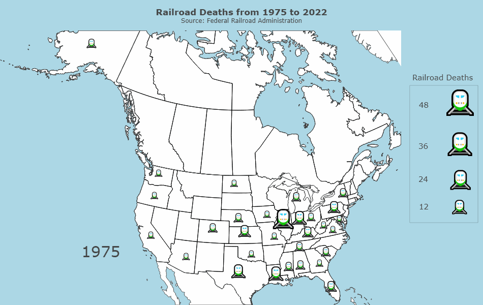

The underlying infrastructure that keeps people and supplies moving across the country is the transportation sector. As such, events that halt the transportation sector can have devastating downstream effects. One such incident occurred on February 3, 2023, in East Palestine, Ohio, where a train carrying tankers of chemicals derailed. This derailment gained immediate media traction with coverage of the event spanning nearly two months, which drew many eyes to the existing railroad infrastructure as well as prior train accidents.
Another large-scale form of transportation are airplanes, which have quickly become the main medium of transporting personnel and supplies. Just in the first two months of 2023, there have been seven cases of runway incursions in the U.S., alluding to the potential risks even within the airline industry. As such, this project aims to explore the safety of the transportation sector, namely trains and airplanes.
More specifically, we aim to answer the following research questions:
Train accident data from 1975 to 2022 was collected from the Federal Railroad Administration (FRA). Respective metadata encodings that map railroad accident codes to railroad accident types were also gathered from the FRA. The FRA accident data were concatenated into a cumulative CSV file. Similarly, the accident encodings were concatenated into a cumulative CSV file. The two datasets were then merged into one large dataset based on the accident codes, and the data was subsetted for only specific columns of interest (e.g. date, number of casualties, number of injuries, longitude/latitude). With the subsetted data, data conversion was performed to transform the data into a more understandable format. For example, the abbreviated string date representation was converted to a numeric representation (e.g. 75 => 1975), FIPS state codes were converted to the string state abbreviation, and numeric weather encodings were converted to their respective string representation.
Aircraft accident data from 1908 to 2009 were collected from Kaggle. Since the dataset contained global aircraft accident records, the data was subsetted for only crash incidents that occurred in the U.S. via regex on the location. Additionally, the location column was further split into two city and state columns via regex. It should be noted that not all states had data for plane crashes every year, which may be a result of a lack of data collection or lack of accidents. Regardless, this does create gaps in our data for airplane accidents. Additionally, the data was originally hosted on OpenData by Socrata but is no longer publicly available.
Table 1: The table displays the first 1000 samples from a dataset of train accidents that occurred in the United States between 1975 and 2022. The dataset includes columns such as the date of the accident, the state where it occurred, the number of deaths and injuries, and the estimated cost of damages. Additionally, the table contains columns that provide information on the cause of the accidents, including weather conditions on the day of the accident, visibility at the time of the accident, and factors that contributed to the occurrence of the accident. This comprehensive dataset is used for analysis to identify trends and patterns in train accidents in the United States.
Table 2: The table presents the first 1000 samples from a comprehensive dataset of aircraft crashes that occurred in the United States from 1908 to 2009. The dataset includes key information such as the date of the crash, the city and state where it occurred, the number of deaths onboard the aircraft, the number of ground deaths, and the name of the operator involved in the crash. This dataset can provide valuable insights for analysts to identify patterns and factors that contribute to aircraft accidents.

Figure 1: The figure displays a time series plot of train accidents in the United States from 1975 to 2022 with the red line indicating the moving average. The plot shows that there has been a general decline in the number of train accidents over the decades since 1975, although there was a peak in 2003 when the number of train accidents was relatively high.
Figure 1 shows that the frequency of train accidents appears to have decreased over time. This decreasing trend could be a result of improvements in technology, which facilitated better infrastructure and safer equipment, leading to less accidents over time. On the other hand, this could also be representative of trains becoming a less mainstream mode of transportation for both people and supplies as other modes of transportation, such as cars and airplanes became more publicly available.
We can also approach the number of train accidents from a regional view.
Figure 2: The figure displays a decade-wise stacked bar plot of train accidents in the United States, categorized by region. The plot shows that during the 1970s, the number of train accidents in the United States was very high, and then gradually decreased over the following decades, but increased again in the 2000s. When looking at the regions, the Midwest region has the highest number of train accidents, followed by the South.
In Figure 2, we can see similar patterns from Figure 1, where there is a decreasing trend throughout the years with a slight uptick in the 2000s. The Midwest and South, nonetheless, have the most frequent train accidents, which may suggest that the railroad infrastructure in these regions may need renovations. Additionally, there may be differences in safety procedures in different regions, which may also contribute to the higher frequency of accidents.
Moving forward, we can analyze which regions have experienced the highest number of accidents and fatalities over the years.
|
Figure 3a: The figure displays a folium plot of train accidents in the United States. Each train accident is represented by a marker on the map, which have been clustered together into groups based on their locations. The plot allows users to interact with it, and by zooming into a particular region, details of each incident, such as the number of deaths and injuries. |

|
Much like our previous findings, Figure 3a shows that train accidents are centered around mostly the Midwest and South. Unsurprisingly, in these areas with higher frequencies of train accidents, there also seems to be a greater number of train accident deaths (Figure 3b). Somewhat surprisingly, the number of deaths in the West seems to be concentrated around California. This may be a result of California being the second largest exporting state in the U.S. Naturally, this would lead to more incoming and outgoing supply trains, and, from a sheer numbers game, result in greater accidents and subsequently deaths.
Considering the number of train accidents, there surely are costs associated with these accidents. As such, we next explore the monetary costs incurred by train accidents for each region and state.
Figure 4: The sunburst plot displays the damage costs of train accidents in the U.S., organized by region and state. The innermost ring represents the regions, and the outer ring shows the states within each region. The plot indicates that the majority of damage costs are incurred by accidents in the Midwest and South regions. The damage cost is measured in billions (G) of dollars for the regions and millions (M) of dollars for each state.
As shown in Figure 4, the monetary costs from train accidents in the South and Midwest are quite similar. More specifically, Texas makes up the majority of the South's train accident costs, followed closely by Illinois in the Midwest and California in the West. These costs coincide with our previous findings regarding the regions with the highest frequency of train accidents. Considering that Texas doesn't have an astonishingly high number of train accidents, Figure 4 may suggest that Texas experiences accidents that cause more equipment damage, leading to higher incurred costs.
Thus far, we've generated insights on the locations of frequent train accidents, as well as their respective deaths and monetary costs incurred. Next, we dive deeper into the root causes of the accidents.
Figure 5: The sankey plot displays the causes of train accidents and their subcategories. The plot shows that derailment is the most common cause of train accidents, with the majority of derailments being caused by track problems, railroad and structure issues, and train operator errors (human factors).
Figure 5 shows that derailments are the leading cause of train accidents, and, based on our prior insights from Figure 4, the magnitude of the derailment most likely plays a significant role in the monetary costs and total casualties. Additionally, the primary cause of derailments stem from rack-, roadbed-, and structures-related issues, pointing to the importance of proper maintenance of railroads. The importance of regular inspection of nearby terrain and railroads themselves cannot be overstated, and the plot above further reinforces that upkeep of older infrastructure can help prevent derailments or at least minimize the damages when they do occur. Another major contributor to derailments are train operations related to human factors. As expected of any manual work, human error also plays a role in train accidents, with train operator error being the second leading cause of derailments.
With the root cause of train accidents considered, we also must examine external factors that may potentially contribute to the frequency of train accidents.
Figure 6: The bubble plot displays the relationship between the monetary cost of train accidents and the weather conditions at the time of the accident. The size of the bubble represents the total monetary cost, while the color and position of the bubble represent the weather, temperature, and date. The plot indicates that the most costly accidents occur on cloudy days.
Figure 6 examines the relationship between weather conditions, temperature, and the resulting monetary costs resulting from train accidents. Surprisingly, there are more accidents that occur on clear days than cloudy days, as shown by the higher prevalence of yellow bubbles than green. However, when accidents do occur on cloudy days, they seem to be more costly and significant, as indicated by the larger green bubbles. However, it is essential to note that weather and temperature may not be the sole cause of these incidents, and other factors, such as the aforementioned terrain and human error, could be at play as well.
After conducting research on train accidents, our curiosity led us to expand our investigation to include aircraft crashes in the United States.

Figure 7: The figure displays a time series plot of aircraft crashes in the United States from 1908 to 2009 with the red line indicating the moving average. The plot indicates an overall increase in the number of crashes since 1908, with a peak in 1972, followed by a gradual decline.
Figure 7 shows, initially, an increasing trend which reverses after peaking in 1972. Upon further investigation, we learned that airplanes became commercially available in the early 1930s. Additionally, the mid-to-late 20th century marked the increased popularity for air travel as well as the involvement of aircraft in military operations during the Vietnam War. However, over the past few decades, there has been a downward trend in the number of airplane crashes, which may be a result of improvements in the technology, facilities, and infrastructure related to air travel. Additionally, Figure 7, when compared with Figure 1, shows that aircraft accidents occur 2-3 times less frequently than train accidents when considering the overlapping dates.
To better understand the turning point in the rise and eventual decline of airplane crashes, we focused our attention between the years 1962 and 1990.
|
Figure 8a: The figure displays a time series plot of aircraft crashes in the United States from 1962 to 1990. The plot indicates an overall fluctuation in the number of crashes during this period. |
Figure 8b: The lollipop plot representing the number of operator-related aircraft accidents in the United States from 1962 to 1990. The plot indicates that a significant number of accidents were caused by the U.S. military air force operators. |
Figure 8a shows general fluctuations in the aircraft accidents from 1962 to 1990. However, these fluctuations don't appear to relate to seasonality. Rather, when examining the aircraft crashes that occurred during this time frame, Figure 8b shows that a significant number of these crashes were attributed to the U.S. military air force and navy, which coincides with operations during the Vietnam War. Following the U.S. military, commercial use-case airliners were the second most common reason for aircraft crashes during this time. This seems to also coincide with the increase in commercial flying that occurred during the mid-to-late 20th century.
Next, we wanted to determine if there were certain regions and states that saw a high frequency of airplane crashes.
|
Figure 9a: The figure displays a folium plot of airplane accidents in the United States. Each airplane accident is represented by a marker on the map, which have been clustered together into groups based on their locations. The plot allows users to interact with it, and by zooming into a particular region, details of each incident, such as the number of onboard and ground deaths. |

|
Similar to our findings on train accidents from Figure 3a, Figure 9a shows that a majority of airplane crashes occur in the Midwest. Expectedly, airplane crashes that result in greater onboard casualties seem to occur heavily on the coasts (Figure 9b), since these would be locations with larger airplanes for longer travel with more passengers onboard. We also found that New York was the most affected state in terms of major aircraft crashes in the East. This coincides with New York being a major transportation zone for immigration and emigration with the presence of major airports, such as JFK and LaGuardia, making it a popular hub for air travel.
We next wanted to examine which regions had the most fatal airplane crashes.
Figure 10: The figure displays the major cities affected by aircraft accidents in the United States, as well as the total number of fatalities caused by accidents in each state from 1908 to 2009. The wordcloud shows that New York and California are the most affected states. The bar plot confirms this with California and New York having the highest number of recorded fatalities among all states.
Unsurprisingly, Figure 10 indicates that regions with frequent airplane crashes has a greater number of fatalities. This suggests that airplane crashes, expectedly, result in significant loss of life. Surprisingly, despite New York having the most occurrences of airplane crashes, California had the greatest number of fatalities from airplane crashes, which suggest that California experienced more devastating accidents. Additionally, our previous insight from Figures 9 coincide with the wordcloud, where coastal states, such as New York, California, and Alaska, are the top three states for airplane crashes. These three states also have noticeably greater fatalities than the fourth state (Illinois).
To get a more granular look of the data, we examined the total number of airplane crashes and fatalities by state for each year
Figure 11: The linked plot displays the total number of aircraft crashes and fatalities for each state in the United States from 1908 to 2009. The linked plot allows users to interact with it, providing a unique and dynamic way of visualizing the relationship between the number of crashes and fatalities across different states over time. The plot shows that Alaska has the highest number of total crashes.
According to Figure 11, Alaska has the highest number of crashes during this time period, followed by California. However, when considering the fatalities between Alaska and California, California appears to have more frequent and significant accidents, resulting in California having the most fatalities related to aircraft accidents (as seen from Figure 10). Another interesting feature is New York. Despite being the state where airplane accidents are third most frequent, the instances are glaringly not as frequent as Alaska or California. Upon inspecting New York individually, we can see a large spike in fatalities in 2001, which coincides with the 9/11 attack. With this particular instance removed, it appears that New York may actually be on-par in terms of accident frequency and fatality as other states.
Throughout this study, we analyzed trends in transportation accidents relating to trains and airplanes. We examined changes in accident frequency over time, and the regional hot spots in which these transportation accidents occurred most frequently while also digging into the potential causes for our findings. We also explored external contributing factors as well as geopolitical events that co-occurred during specific timeframes.
Returning to our initial motivations, it appears that the East Palestine train derailment wasn't something out of the blue. Considering the frequency of train derailments, it appears that the incident in Ohio may have caused the media stir because of the following chemical burn that led to pollution in the water and air, causing downstream effects on livestock and neighboring states.
Additionally, airplanes, in general, appear to be a safe form of transportation, as the instances of airplane crashes has been on the decline despite the rise in usage from the general populace. Nonetheless, when accidents do occur, they are quite devastating.
There is further room for exploration from our current study. Despite scavenging national and state-level government transportation websites for datasets on airplane and railroad traffic, we weren't able to find comprehensive data for a large enough time frame. If this becomes available, it would be interesting to investigate the proportion of accidents, as well as the change in normalized counts. This could reveal insights on the magnitude of change in the number of accidents over time.
Mooney, P. T. Latitude and Longitude for Every Country and State. Kaggle.(Click Here)
Sauro Grandi. Airplane Crashes Since 1908. Kaggle. (Click Here)
Office of Safety Analysis. (2021). Railroad safety statistics annual report: 2020. Federal Railroad Administration.(Click Here)
U.S. Department of Transportation. (2011). Rail Equipment Accident/Incident. Federal Railroad Administration.(Click Here)
U.S. Department of Transportation. Appendix C: Train Operation Human Factor. Federal Railroad Administration. (Click Here)
U.S. Department of Transportation. Appendix C: Signal and Communication. Federal Railroad Administration. (Click Here)
U.S. Department of Transportation. Appendix C: Track, Roadbed, and Structure. Federal Railroad Administration. (Click Here)
U.S. Department of Transportation. Appendix C: Mechanical and Electrical Failures. (Click Here)
U.S. Department of Transportation. Appendix C: Miscellaneous Causes Not Otherwise Listed.(Click Here)